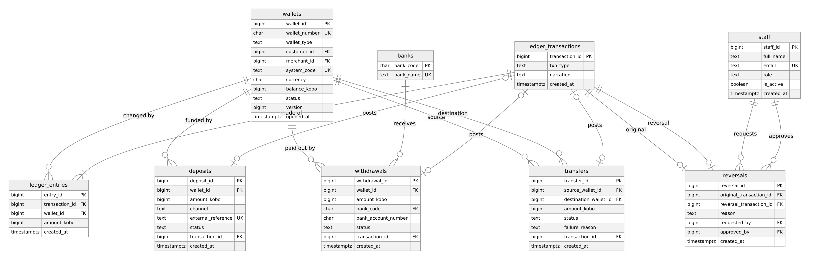
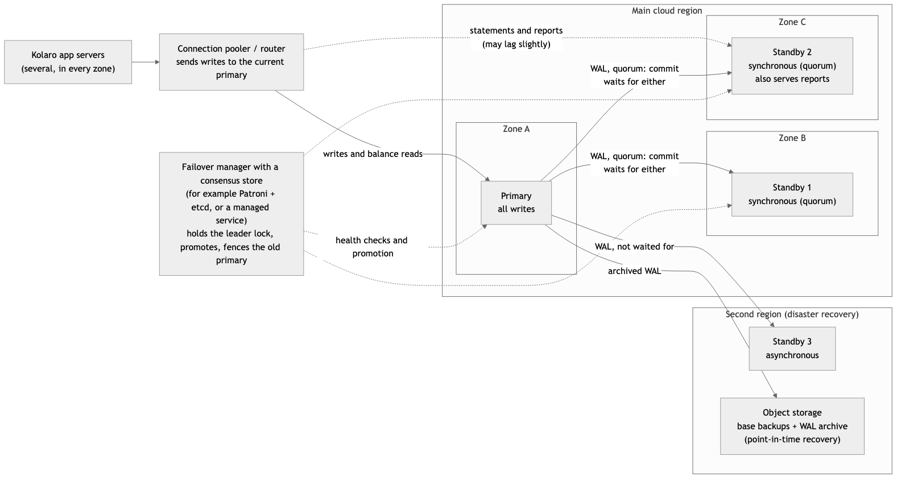

| Course: MIT 8103 Advanced Database Systems, First Semester CA, 2026/2027 | Student: Ikenna Odoh, 2026/A/MIT/0310 |
| GitHub repository (private, shared with the assessor): https://github.com/ikenna042/advanced-database-portfolio | |
Kolaro Wallet is a simulated Nigerian digital wallet, invented for this portfolio; all data is synthetic. Customers hold naira, fund their wallets, send money to each other and pay merchants.
The same case study, schema and data are used in all five portfolios. Everything runs in a local Docker lab with PostgreSQL 16, MongoDB 7.0 and Redis 7.4, plus a replication cluster and a Citus cluster for Portfolio 5. Each portfolio folder has a README, its SQL or scripts, an evidence/ folder holding the raw output of its last run, and one run.sh that rebuilds everything from nothing.
The relational schema has 16 tables (customers, KYC, wallets, merchants, a double-entry ledger, transfers, deposits, withdrawals, reversals, idempotency keys and an audit log), normalised to BCNF in normalisation.md. Money is stored as whole kobo in BIGINT; the ledger is append-only and double-entry, with each transaction's entries netting to zero; and requests such as transfers are kept separate from posted entries, so a failed request moves no money.
Rules are enforced with primary keys, foreign keys, UNIQUE, expression and partial unique indexes, CHECK constraints, and deferred constraint triggers. All 31 constraint tests pass, and the ER diagrams are generated from Mermaid source.

A seeded generator produced a year of activity: 100,000 customers, 2.08 million ledger transactions and 4.16 million entries. Eleven queries tied to real operations were each timed five times (median), before and after indexing, using EXPLAIN (ANALYZE, BUFFERS). Four further experiments compared B-tree, BRIN and partial indexes, partitioning, and the planner's estimates.
| Query | Before (ms) | After (ms) | What changed |
|---|---|---|---|
| Q1b customer statement, rewritten | 208.0 | 0.42 | Covering index matching ORDER BY … LIMIT: 499 times faster |
| Q7 three-hop money trail (recursive) | 437.4 | 0.31 | An index on the recursive join column: 1,430 times faster |
| Q2a/Q2b customer by email | 7.5 | 0.09 | Q2a didn't use the lower(email) index until the query was rewritten to match it |
| Q8 count dormant wallets | 111.3 | 157.6 | Slower: an index can't help a query that must read most rows |
Two-session demonstrations (driven with dblink) show commit, rollback, savepoints and deferred constraints; dirty reads, non-repeatable reads and phantoms at each isolation level; write skew under REPEATABLE READ and its prevention by SERIALIZABLE; deadlock, row locks, optimistic locking and SKIP LOCKED; and crash recovery, where the server was killed with SIGKILL and recovered through WAL replay.
Triggers now enforce the three rules Portfolio 1 left open. A transfer() procedure locks both wallets in wallet_id order and uses idempotency keys. 17 rule tests pass. In 15-second stress runs (16 clients, 20 wallets):
| Code | Isolation | Transfers per second | Money created from nothing |
|---|---|---|---|
| Naive read-then-write | Read committed | 36 | 2,184,302 kobo (lost updates); 20 of 20 balances wrong |
| Naive read-then-write | Serializable | 26 | 0, but 53% of transactions failed after 10 retries |
transfer() | Read committed + ordered row locks | 1,686 | 0, with no deadlocks and no retries |
MongoDB holds four $jsonSchema-validated collections loaded from PostgreSQL. The counts match exactly: 100,003 customers, 882,099 statement entries and 127,410 transfers.
Customers embed their wallet and KYC history; statements use the bucket pattern (one document per wallet per month, at most 500 entries); transfers are graph edges for $graphLookup; audit events have flexible fields and a TTL index.
Indexing: a money-trail traversal fell from 13,050 ms to 18 ms, while an aggregation over 246,631 entries didn't improve, because unwinding them all costs more than finding them.
Single-document atomicity: 50 concurrent payment requests were sent against a daily limit. The naive version approved all 50, putting spending N50,000 over the limit. A single atomic update approved exactly 25.
Redis: idempotency claims (SET NX: 1 of 20 identical requests won), fixed-window and Lua sliding-window rate limits, sessions, cache-aside with invalidation, and a capped activity feed.
Suitability: the ledger stays relational. MongoDB serves read models and Redis holds short-lived state (polyglot persistence). A Cassandra table was designed but not run.
Replication: three PostgreSQL nodes with a synchronous and an asynchronous standby. The primary was killed while the application was sending transfers.
The synchronous standby held all 264 confirmed transfers, so nothing was lost; the lagging asynchronous standby held none of them. Recovery took 10.6 s, 9.7 s of which was failure detection. Waiting for a standby 10 ms away raised commit latency from 4.1 ms to 20.0 ms. With the only synchronous standby down, commits blocked; quorum commit (ANY 1 of 2) kept them flowing. A restarted old primary caused real split brain: it committed a transfer that reused an ID already issued by the new primary, and pg_rewind then turned it back into a standby.
Sharding (Citus, the 4.2 million-entry data set, sharded on wallet_id):
Statements became single-shard router queries. A fan-out aggregation ran in 1.49 s, against 2.65 s on one server, while a join on a column that isn't the shard key took 24.4 s, against 0.89 s. 97% of real transfers span shards and commit with two-phase commit (PREPARE TRANSACTION, then COMMIT PREPARED). A failed worker made its shards unavailable rather than returning wrong answers. Adding a worker moved shards in 143 s while 18,373 transfers committed with 0 failures.
The README relates each result to CAP and PACELC and proposes the cloud deployment in Figure 2.

portfolio-5-distributed-cloud/evidence/r5_failover.txt)Every transfer node1 confirmed before it died, looked up on the other nodes:
[node2] ... confirmed_by_node1 | missing_here [node3] ... confirmed_by_node1 | missing_here
264 | 0 264 | 264
Last confirmation from node1: +0.09 s node2 promoted: +10.26 s First confirmation from node2: +10.64 s
Every figure in this document comes from these evidence files, which the scripts in the repository regenerate. The repository's commits show the portfolio developing from 4 to 10 November 2026: the lab and Portfolio 1 first, then one commit per portfolio.
Design choices. I chose a wallet because money gives every topic a clear test of correctness: the ledger must always balance, and no transfer may be lost or posted twice. Portfolio 1's double-entry, append-only design made that testable, and each later portfolio was judged against it: a fast query must return the same answer, and a concurrent or distributed run must leave the trial balance at zero. I kept the ledger relational throughout. Portfolio 4 showed that MongoDB and Redis suit the read models and short-lived state, but not the multi-row transactions that move money.
Challenges. Several results only became trustworthy after I questioned them.
new multixact has more than one updating member). I recorded it and matched it to an open upstream report rather than claiming to diagnose it.Lessons learned.
ledger_transactions separately made almost every transfer a distributed transaction, a flaw I would correct by co-locating it with the source wallet.Tool: Claude Code (Anthropic), using the Claude Opus 5.5 model. The course tutor confirmed that AI could be used for the implementation, provided the use is declared and the student understands the work.
Used for: planning the portfolio; writing the Docker configuration, SQL, MongoDB, Redis and shell scripts, tests and READMEs; running the scripts to capture evidence; and drafting this document. Commits made with the tool carry a Co-Authored-By line.
How the output was reviewed and verified:
Every claim is backed by output from a real run, saved in each evidence/ folder and reproducible with run.sh; no result was typed in by hand. Built-in checks make the scripts fail when results are wrong: constraint and rule tests, trial-balance and balance-audit queries, and PostgreSQL/MongoDB count comparisons. Figures in the READMEs were cross-checked against the evidence files, and errors found this way were corrected, for example a wrongly reported entry count in Portfolio 4. I studied each portfolio's concepts and results from my revision notes, so that I can explain and rerun any part of the work.
Abadi, D. (2012) 'Consistency tradeoffs in modern distributed database system design: CAP is only part of the story', Computer, 45(2), pp. 37–42.
Cubukcu, U., Erdogan, O., Pathak, S., Sannakkayala, S. and Slot, M. (2021) 'Citus: distributed PostgreSQL for data-intensive applications', Proceedings of SIGMOD '21, pp. 2490–2502.
Elmasri, R. and Navathe, S.B. (2016) Fundamentals of Database Systems. 7th edn. Boston: Pearson.
Gilbert, S. and Lynch, N. (2002) 'Brewer's conjecture and the feasibility of consistent, available, partition-tolerant web services', ACM SIGACT News, 33(2), pp. 51–59.
Kleppmann, M. (2017) Designing Data-Intensive Applications. Sebastopol, CA: O'Reilly Media.
Ports, D.R.K. and Grittner, K. (2012) 'Serializable Snapshot Isolation in PostgreSQL', Proceedings of the VLDB Endowment, 5(12), pp. 1850–1861.
Citus Data (2024) Citus 12.1 documentation. Available at: https://docs.citusdata.com/en/v12.1/ (Accessed: 10 November 2026).
MongoDB, Inc. (2024) MongoDB 7.0 manual. Available at: https://www.mongodb.com/docs/v7.0/ (Accessed: 10 November 2026).
PostgreSQL Global Development Group (2024) PostgreSQL 16 documentation. Available at: https://www.postgresql.org/docs/16/ (Accessed: 10 November 2026).
Redis Ltd. (2024) Redis documentation. Available at: https://redis.io/docs/ (Accessed: 10 November 2026).
Tools: Docker/OrbStack, pgbench, dblink, mermaid-cli.